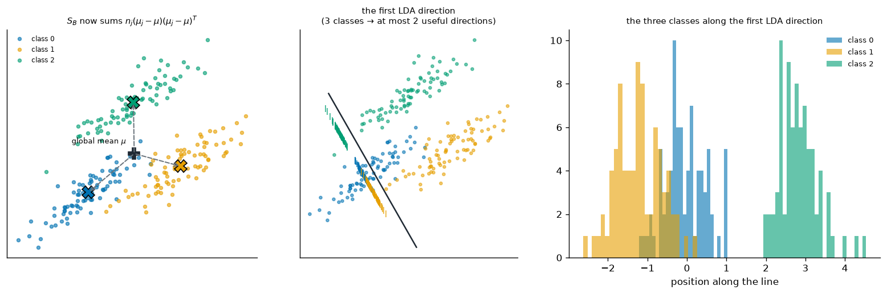
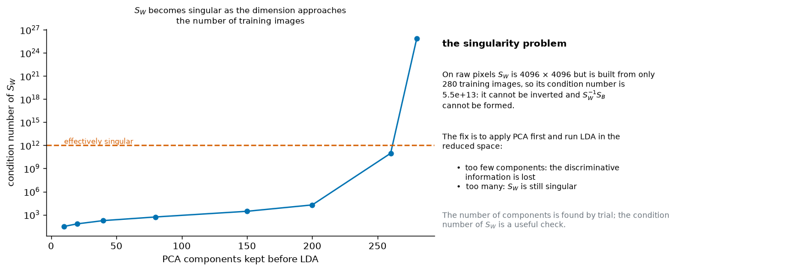
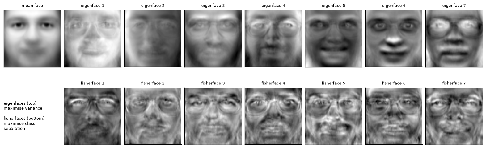
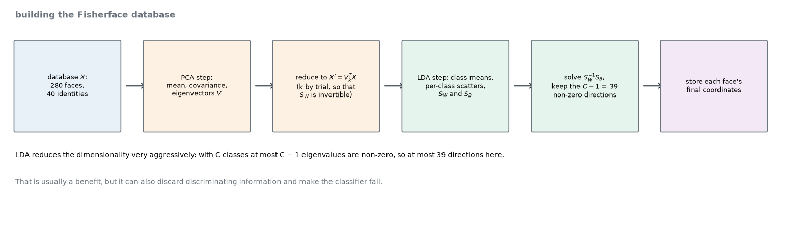
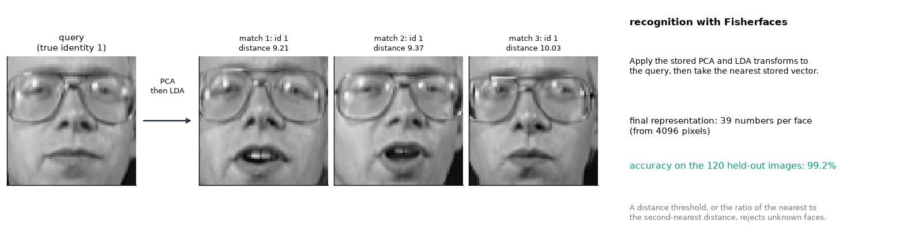

Lesson 05.05
Fisherfaces
Linear discriminant analysis applied to facial recognition: the multi-class extension, the singularity of the within-class scatter and the PCA step that fixes it, and why Fisherfaces beat Eigenfaces when illumination varies.
Learning outcomes
After this lesson you should be able to:
- extend LDA to more than two classes and write the multi-class $S_B$;
- explain the singularity problem for image data and the role of the preliminary PCA step;
- state the Fisherface enrolment and query algorithms and the C − 1 limit on the number of components;
- explain why Fisherfaces outperform Eigenfaces when illumination varies.
Fisherfaces
The Fisherfaces method takes its name from Fisher, who proposed linear discriminant analysis in the 1930s. In facial recognition the goal is to distinguish images of different people while still recognising the same person in two distinct images. We have already seen the Eigenface method, where PCA reduces the dimensionality by finding the principal components along the directions of maximum variance. But if the intra-class variation is greater than the inter-class variation, the Eigenface method may work poorly: changes in illumination and expression can dominate the inter-class differences, so after PCA the classifier cannot separate the different faces.
Using linear discriminant analysis instead, the class labels let us find a transformation that preserves discrimination. Facial recognition usually has many individuals to identify, so the number of classes is large and we must extend the two-class algorithm of the last lesson.
Multi-class LDA
With three classes of two-dimensional data we can still transform onto a line $v$ that best discriminates between them, and the principle is unchanged: maximise the between-class scatter and minimise the within-class scatter of the transformed data, using the same objective function
$$J(v) = \frac{v^{T} S_B v}{v^{T} S_W v}. \tag{1}$$
The definitions of the two terms change slightly. In the two-class case $S_B$ came from the difference of the two class means. With multiple classes it is defined instead from the weighted deviation of each class mean $\mu_j$ from the global mean $\mu$, the weight being $n_j$, the number of data points in class $j$, so classes with more points count for more:
$$S_B = \sum_{j=1}^{C} n_j (\mu_j - \mu)(\mu_j - \mu)^{T}. \tag{2}$$
The within-class scatter $S_W$ is still produced by summing the scatter matrices of each class.

The solution and the singularity problem
As in the two-class case, maximising $J(v)$ is a generalised eigenvalue problem,
$$S_B\, v = \lambda\, S_W\, v, \tag{3}$$
which becomes a standard eigenvalue problem for $S_W^{-1} S_B$ and can be solved numerically. That is only possible if the inverse of $S_W$ exists, that is if $S_W$ is non-singular. We can test this by computing the condition number of the matrix: a very large condition number means the matrix is very likely singular and the inverse cannot be computed. For image data, with its many features and dimensions, $S_W$ is very likely to be singular.
The way around the problem is to apply PCA before LDA to reduce the number of dimensions. How many PCA eigenvectors to use must be found by trial:
- too few and the discriminating information in the dataset is lost;
- too many and $S_W$ remains singular.
After PCA, LDA can be applied to reduce the dimensionality further while preserving the information that discriminates the data. LDA produces very aggressive dimension reduction: the number of non-zero eigenvalues is at most $C - 1$, where $C$ is the number of classes, so only the eigenvectors corresponding to non-zero eigenvalues are used. This large reduction can occasionally remove important discriminating information and cause the classifier to fail.


The FisherFace algorithm
As with Eigenfaces the method splits into enrolment, which converts the database of faces into the LDA representation, and a simpler query algorithm.
Given the database matrix $X$ whose columns are the image vectors $x_i$, with $C$ classes (individuals) and $n_j$ faces in each:
- PCA step, as in the original paper and as in the Eigenface algorithm, with no class information: compute the mean μ of all data points, form the covariance matrix Σ of the mean-corrected points, solve for its eigenvectors $V$ and eigenvalues, and transform the dataset to a reduced space $X' = V_k^{T} X$ with $k$ eigenvectors. The value of $k$ is found by trial as described above.
- LDA step: compute the global mean μ and the mean $\mu_j$ of each class, then the scatter matrix $S_j$ of every class individually, and from these the between-class scatter $S_B$ of equation (2) and the within-class scatter $S_W$. In many simple face datasets each individual has the same number of images; in real-world datasets they do not, which is why $S_B$ is weighted.
- Solve the standard eigenvalue problem for $S_W^{-1} S_B$, which is possible thanks to the earlier dimension reduction, and transform the database by the $C - 1$ eigenvectors corresponding to the $C - 1$ non-zero eigenvalues.
To recognise an unknown query image, apply both the stored PCA and LDA transforms to it, then use a classifier such as nearest neighbours to decide which class it belongs to.


Eigenfaces versus Fisherfaces
Belhumeur and co-authors, who introduced the Fisherface method, compared the two on the Harvard and Yale datasets. The Harvard dataset consists of faces taken under different illuminations, divided into subsets in which the variation in illumination grows. As you would expect from this and the previous lesson, the classification performance of the Eigenface method gets worse as illumination variation increases, while the Fisherface method performs consistently across all illuminations. On the Yale dataset, which varies both illumination and facial expression, Fisherfaces again outperform Eigenfaces. The error rate of the Eigenface method does fall as more principal components are used, eventually saturating at roughly 50 components.
![Eigenfaces versus Fisherfaces under illumination change. A linear illumination ramp of increasing strength is added to the query images only. Because PCA keeps the directions of greatest variance, and illumination produces a great deal of variance, the Eigenface representation degrades as the lighting changes. Fisherfaces, which choose directions that separate identities rather than directions of large variance, hold up much better. Belhumeur's original paper reported the same pattern on the Harvard and Yale datasets.](figures/eigen_vs_fisher.png)
Check your understanding
1. In multi-class LDA the between-class scatter S_B is defined from
The within-class scatter is still the sum of the per-class scatter matrices.
2. Why is the within-class scatter matrix usually singular for face images?
A singular S_W cannot be inverted, so S_W^-1 S_B cannot be formed.
3. How does the Fisherface method deal with the singularity of S_W?
The number of PCA components is found by trial: too few loses discrimination, too many leaves S_W singular.
4. For a database with C identities, LDA retains at most how many directions?
Only the eigenvectors with non-zero eigenvalues are used, and there are at most C - 1 of them.
5. A very large condition number for S_W indicates that
It is the practical test for whether enough dimension reduction has been applied.
6. Fisherfaces outperform Eigenfaces under varying illumination because
Belhumeur's paper reported this on the Harvard and Yale datasets.
7. To recognise a query image with a Fisherface database you must
The query must pass through exactly the same pipeline as the enrolled faces.
Image credits
- The Database of Faces (Olivetti / AT&T), AT&T Laboratories Cambridge, free for research use
Other figures are generated from synthetic data by the lesson engines.